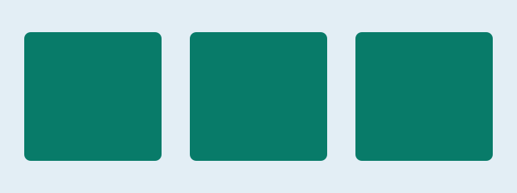

2.2.7 资源提示：preload、prefetch与preconnect的边界
本页确实预加载并显示同一张SVG；prefetch可能被浏览器忽略，不把声明当成功。

这是同源本地实验，不能证明preconnect节省公网TLS时间。
实际观察结果
尚未操作。
先预测再运行；页面结果与DevTools/真实设备证据分别记录。
本页确实预加载并显示同一张SVG；prefetch可能被浏览器忽略，不把声明当成功。

这是同源本地实验，不能证明preconnect节省公网TLS时间。
尚未操作。
先预测再运行；页面结果与DevTools/真实设备证据分别记录。